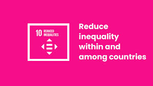

Reduced Inequalities
Inequality threatens long-term social and economic development, harms poverty reduction and destroys people’s sense of fulfillment and self-worth. The incomes of the poorest 40 per cent of the population had been growing faster than the national average in most countries. But emerging yet inconclusive evidence suggests that COVID-19 may have put a dent in this positive trend of falling within-country inequality. The global refugee population has surged to 37.8 million – primarily from Afghanistan, the Bolivarian Republic of Venezuela, the Syrian Arab Republic and Ukraine – intensifying humanitarian pressures. Reports of discrimination are on the rise worldwide, affecting urban residents, women, persons with disabilities, the poorest, and those with lower education levels most severely. Discrimination remains a pervasive, systemic issue tied to social identity and status. Globally, 1 in 5 people report experiencing discrimination on grounds prohibited by international law within the past year, with rates highest in Least Developed Countries, averaging 24.3%. Youth (15–29 years) more often report discrimination based on migration status, ethnicity and sexual orientation, while older adults (60+ years) encounter age, disability and health-related discrimination. Why do we need to reduce inequalities? Inequalities based on income, sex, age, disability, sexual orientation, race, class, ethnicity, religion and opportunity continue to persist across the world. Inequality threatens long-term social and economic development, harms poverty reduction and destroys people’s sense of fulfillment and self-worth. This, in turn, can breed crime, disease and environmental degradation. We cannot achieve sustainable development and make the planet better for all if people are excluded from the chance for a better life. What are some examples of inequality? Women and children with lack of access to healthcare die each day from preventable diseases such as measles and tuberculosis or in childbirth. Older persons, migrants and refugees face lack of opportunities and discrimination – an issue that affects every country in the world. One in five persons reported being discriminated against on at least one ground of discrimination prohibited by international human rights law. One in five people worldwide has experienced discrimination in some form, with women and people with disabilities disproportionately affected. Discrimination has many intersecting forms, from religion, ethnicity to gender and sexual preference, pointing to the urgent need for measures to tackle any kind of discriminatory practices and hate speech. How do we tackle discrimination? In today’s world, we are all interconnected. Problems and challenges like poverty, climate change, migration or economic crises are never just confined to one country or region. Even the richest countries still have communities living in abject poverty. The oldest democracies still wrestle with racism, homophobia and transphobia, and religious intolerance. Global inequality affects us all, no matter who we are or where we are from. Can we achieve equality for everyone? It can – and should be – achieved to ensure a life of dignity for all. Political, economic and social policies need to be universal and pay particular attention to the needs of disadvantaged and marginalized communities. What can we do? Reducing inequality requires transformative change. Greater efforts are needed to eradicate extreme poverty and hunger, and invest more in health, education, social protection and decent jobs especially for young people, migrants and refugees and other vulnerable communities. Within countries, it is important to empower and promote inclusive social and economic growth. We can ensure equal opportunity and reduce inequalities of income if we eliminate discriminatory laws, policies and practices. Among countries, we need to ensure that developing countries are better represented in decision-making on global issues so that solutions can be more effective, credible and accountable. Governments and other stakeholders can also promote safe, regular and responsible migration, including through planned and well-managed policies, for the millions of people who have left their homes seeking better lives due to war, discrimination, poverty, lack of opportunity and other drivers of migration.